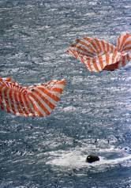
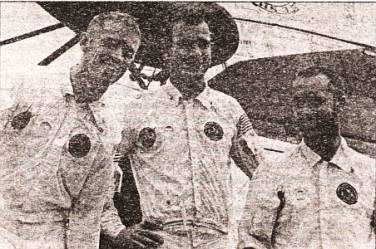
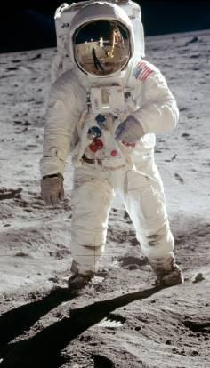

«Орел» идет на посадку
Теперь все мы знаем, что высадку на Луну совершил экипаж «Аполлона-11» в составе Нейла Армстронга, Майкла Коллинза и Эдвина Олдрина. Однако лишь недавно стало известно, что подобно тому, как сообщение ТАСС было подготовлено в трех вариантах, в том числе и с некрологом Ю. А. Гагарина, так и для тогдашнего президента США Ричарда Никсона была заготовлена версия речи с такими словами: «Судьба распорядилась так, что людям, полетевшим на Луну ради мирного ее освоения, суждено упокоиться там в мире. Эти мужественные люди, Нил Армстронг и Эдвин Олдрин, знают, что у них нет никакой надежды…»

Приводнение «Аполлона». Очередная лунная экспедиция закончена.
«Лишь самообладание, находчивость и вовремя принятые спецмеры спасли экипаж, — пишет по этому поводу в своей книге, недавно вышедшей в США, бывший директор НАСА Гюнтер Вендт. — Катастрофа, которую все ждали, не состоялась».
Причем, по его мнению, основным препятствием на пути к Луне были вовсе не всевозможные технические неполадки, а… происки КГБ и прочих спецслужб.
Ныне у нас есть возможность дополнить факты, изложенные в книге Вендта, данными, добытыми из других источников. И вот какая любопытная картина вырисовывается…
ПОЧЕМУ ВЫБРАЛИ ИМЕННО ИХ? Итак, 9 января 1969 года НАСА официально объявило о составе первого экипажа для полета на Луну. Какие качества собрали этих людей в один экипаж, которому было поручено исполнение главной миссии всей программы?
Оказалось, что у них есть немало общего. Все 1930 года рождения, практически одинакового роста (у Армстронга и Коллинза — по 177 см, у Олдрина — 175 см) и веса (по 75 кг). В отряд астронавтов попали в 32–33 года — в самом расцвете сил.
Причем Армстронг и Олдрин — блондины с голубыми глазами, и лишь Коллинз — шатен.

Экипаж «Аполлона-9».
Все три астронавта, безусловно, были личностями, людьми, обладающими независимым мышлением, хотя и характер у каждого свой. Армстронг молчалив, сдержан, его даже с большой натяжкой нельзя назвать искусным оратором. Коллинз — полная ему противоположность: открыт, обаятелен; его речь, обильно украшенная шутками, льется легко и свободно. В каждом слове и жесте чувствуется светское воспитание. Олдрин в этом отношении находится где-то посередине. Он не так речист, как Коллинз, но и не так молчалив, как Армстронг.
Тем не менее командиром «Аполлона-11» назначили именно Армстронга. Прежде чем вынести такое решение, руководители НАСА шаг за шагом проследили всю жизнь кандидатов на эту почетную должность. Армстронг удовлетворял самым высоким требованиям: воевал, проявил находчивость и мужество при аварии на «Джемини-8», а потом еще спас себя и товарищей во время аварии экспериментальной летающей модели лунной кабины. В общем, в отряде астронавтов не оказалось больше никого, кто столько раз оказывался в экстремальных ситуациях и с честью выходил из них. В этом смысле Армстронг был самым опытным. Даже его оклад был выше, чем у других членов экипажа, — 30 054 доллара в год против 18 623 долларов у Олдрина и 17 147 долларов у Коллинза.
АЖИОТАЖ НА ВЗЛЕТЕ. Интерес к экспедиции был воистину сумасшедшим. Стодесятиметровая махина ракеты-носителя «Сатурн-5» была видна за много километров вокруг и днем и ночью. Понаблюдать за ее стартом со всей Америки съехались сотни тысяч людей. Все окрестные отели были забиты до предела. Пришлось даже спустить воду в бассейнах и на дне их поставить кровати. Многие ночевали прямо в своих автомобилях. Владельцы магазинов и баров работали круглосуточно, распродавая все, что можно было съесть и выпить. Тысяча полицейских сбилась с ног, поддерживая порядок.
Досталось и астронавтам. Весь день пятого июля они отвечали на вопросы журналистов, выступали по радио и на телевидении. Но вывести Армстронга из себя или даже чуточку поколебать его невозмутимость никому так и не удалось. Он отвечал на вопросы четко, но суховато. Даже не улыбнулся, когда его спросили, возьмет ли он себе на память камешек с Луны. «На этот счет мы не получали никаких указаний», — отрапортовал он без тени улыбки.
А на вопрос: «Что вы станете делать, если обнаружите, что не сможете взлететь с Луны: начнете молиться, станете сочинять предсмертные послания близким или оставите на Луне лишь подробную информацию о случившемся?» — вместо командира ответил Олдрин.
«Я, скорее всего, потрачу оставшееся время на то, чтобы попытаться исправить взлетный двигатель», — сказал он.
Возможно, поэтому судьба и пощадила их. Хотя, если честно, у них было не так много шансов, чтобы вернуться живыми с Луны.
СЛУХИ О НАШЕЙ СМЕРТИ ПРЕУВЕЛИЧЕНЫ… 20 июля 1969 года в 18 часов 47 минут по среднеевропейскому времени спускаемый аппарат отстыковался от орбитального корабля и начал спуск к поверхности Луны. В 21 час 05 минут аппарат стал заходить на посадку. Она была намечена в районе Моря Спокойствия.
В последнюю минуту астронавты заметили, что их несет прямо на огромный камень, лежащий возле кратера. До Луны оставалось всего 200 м, когда Армстронг включил ручное управление, и, мчась со скоростью 80 километров в час, «Орел», ведомый его твердой рукой, перемахнул через препятствие. Промчавшись еще шесть километров к западу от кратера, он притормозил свой бег и наконец опустился в лунную пыль. Прошло 103 часа после старта с мыса Кеннеди.
Через восемнадцать секунд Армстронг заглушил двигатель.
«Хьюстон, пункт прибытия — база Спокойствия, — буднично сказал он. — „Орел“ совершил посадку».
На Земле вздохнули с облегчением. Однако сами Армстронг с Олдрином в этот момент напряженно прислушивались к звукам за тонкими стенками кабины. А ну как аппарат весом в 2,5 т начнет увязать в лунной пыли? Или, что того хуже, завалится на бок…
Они прекрасно понимали, что та жестяная коробка, которая гордо звалась лунным модулем, могла запросто навсегда остаться на поверхности Селены. Впоследствии Эдвин Олдрин как-то сказал, что вероятность удачной посадки никогда не оценивалась специалистами выше 50–60 процентов. А ведь лунный модуль должен был еще и подняться снова на окололунную орбиту.
Когда летом 1968 года первый образец этого аппарата был доставлен на мыс Кеннеди из заводского цеха, специалисты схватились за голову. «Он обречен на катастрофу, решили все, — вспоминал астронавт Джеймс Ловелл. — При первых же испытаниях этого хрупкого аппарата, обтянутого какой-то пленкой, оказалось, что все основные его элементы имеют серьезные неполадки…»
И хотя количество дефектов превзошло ожидания самых больших пессимистов НАСА, через 11 месяцев именно на этой конструкции Армстронг и Олдрин должны были совершить высадку на Луну. Сколько-нибудь реально исправить ситуацию не было времени.
…Минута шла за минутой, и стало ясно — модуль стоит на Луне довольно устойчиво.
ЛОПНЕТ ЛИ ШЛАНГ? Однако астронавты туг же столкнулись совсем с иной нештатной ситуацией. Сразу после посадки они, согласно программе, стали откачивать воздух из гелиевого бака, чтобы иметь возможность в случае необходимости взлететь в любой момент. При этом гелий, охлажденный до — 268 °C, проник в топливопровод. В нем образовалась ледяная пробка. Тепло остывающих двигателей разогревало топливо, давление росло… Если бы шланг лопнул, топливо попало бы в двигатель, и тот мог взорваться.
Лишь через полчаса стало ясно, что беда и на этот раз миновала. Шланг выдержал нагрузку, а солнце растопило ледяную пробку.
Астронавты стали готовиться к первой прогулке по Луне. Но, навьючив на громоздкие скафандры рюкзаки с системой жизнеобеспечения, они обнаружили, что оказались в положении слонов, загнанных в посудную лавку. Одно неловкое движение, и они могут что-либо поломать. Что тогда?…
Беспокоил и тот факт, что для открытия люка им пришлось сбрасывать давление в кабине до нуля. Удастся ли потом восстановить атмосферу?…
Впрочем, так или иначе программу надо было выполнять. И в 3 часа 39 минут Армстронг и Олдрин открыли люк, выставили наружу лесенку. Что ждало их внизу?
БЛУЖДАНИЯ СРЕДИ СТРАХОВ. Кстати, астронавты буквально рисковали головой каждую секунду своего пребывания на Луне и еще вот по какой причине. Миллиарды лет на поверхность естественного спутника нашей планеты падают метеориты. Там нет атмосферы, поэтому ничто не сдерживает их полета. В любой момент бомба, летящая с неба, могла пробить лунную «жестянку», нанести ей непоправимые повреждения.
Та же опасность могла ждать астронавтов на прогулке. Если метеорит — допустим, крохотный камешек — попал бы в кого-то из них, то наверняка пробил бы скафандр. (Умолчим о том, что он мог угодить человеку в голову, нанести тяжелую травму, а то и попросту убить.) Простая разгерметизация скафандра уже грозила смертью.
Многими неприятностями грозило даже обычное падение. Нагруженные рюкзаками и скафандрами, астронавты даже при шестикратно меньшем по сравнению с земным тяготении запросто могли потерять равновесие. Подняться же упавшему было бы столь же трудно, как средневековому рыцарю в тяжелом облачении. Тут могла спасти лишь взаимовыручка.
ЗЛОПОЛУЧНАЯ КНОПКА. Тем не менее смелым иногда везет. Прогулка, длившаяся 2,5 часа, прошла без особых приключений. Астронавты набрали лунных камней и в 6 часов 11 минут вновь оказались на борту «Орла». Закрыли люк изнутри и стали готовиться ко взлету.
Но тут их ждала новая беда. «Я стал укладывать принесенные трофеи, — вспоминал Эдвин Олдрин, — и увидел на полу маленькую черную штучку. То была отломившаяся часть кнопки. Я посмотрел на длинный ряд кнопок, чтобы понять, что сломалось, и обомлел. Это была кнопка зажигания двигателей…»
Выходя на прогулку, Олдрин задел-таки ее своим громоздким скафандром. И как теперь включить двигатель?!
Пришлось радировать на Землю. Хьюстон ответил сдержанно: «Вас поняли. Оставайтесь на связи, пожалуйста».
Затем воцарилась долгая пауза.
В Центре управления полетов стали разбираться в ситуации. И прошло немало времени, прежде чем специалисты смогли несколько успокоить астронавтов:
«База Спокойствия, здесь Хьюстон. Наши данные телеметрии показывают, что в данный момент кнопка зажигания находится в положении „выключено“. Мы просим вас оставить ее так до запланированною включения…»
Но как включить ее теперь? Как нажать кнопку, которой нет?
Астронавты лихорадочно стали искать, чем можно было надавить на остаток кнопки, утопленной в нише. Наконец это удалось сделать с помощью… шариковой ручки.
«Поехали?!» Нет! Двигатель не включился…
ЧРЕЗВЫЧАЙНАЯ ПОЧИНКА. Кстати, этот двигатель и прежде пользовался дурной славой. Так, 1 сентября 1965 года во время предварительных испытаний он попросту взорвался на стенде. В апреле 1967 года сгорело еще два двигателя. «Следует признать, что данный стартовый двигатель вызывает больше всего нареканий среди конструкций программы „Сатурн“-„Аполлон“», — весьма откровенно было сказано в одном из документов НАСА.
В общем, как и предполагали журналисты, перед астронавтами замаячила реальная опасность навсегда застрять на Луне. Что делать?

Н. Армстронг на Луне.
Чинить двигатель, как и предлагал Олдрин. На все про все у них двоих оставалось 26 часов. И это вместе с тем временем, которое им понадобится, чтобы добраться до корабля. На большее у них просто не хватит кислорода.
Спасать их никто не прилетит — это они знали наверняка.
Ни подготовить к старту следующий «Аполлон-12», ни запустить русскую спасательную экспедицию в столь сжатые сроки было невозможно.
И в тот момент, когда Никсон обдумывал, как бы поделикатнее объявить миру о возможной трагедии, а Коллинз на окололунной орбите размышлял, как поступить ему, если друзья все-таки не смогут стартовать с Луны, астронавты работали.
Они все же нашли поломку! И 22 июля 1969 года в 5 часов 40 минут Армстронг и Олдрин вручную открыли пироклапаны, разделявшие баки с гелием и топливом, запустили двигатель. Не с первой попытки, но все-таки запустили.
И Луна неохотно отпустила героев. Что ей еще оставалось делать?…
Однако и это еще не финал истории…
КГБ БЫЛ ДАН ПРИКАЗ. Как следует из недавно рассекреченных архивов ЦРУ, сообщает Вендт, из книги которого взяты эти ужасающие подробности, перед КГБ была поставлена задача: любой ценой не допустить, чтобы американская экспедиция на Луну прошла успешно. Причем первоначально разрабатывалось два варианта — сбить «Аполлон-11» еще во время запуска или перехватить астронавтов и капсулу с лунным грунтом, когда они уже приводнятся на нашей планете.
И вот в июле 1969 года, за несколько дней до старта «Аполлона», у мыса Канаверал появились советские рыболовецкие сейнеры. Это понятно — наши чекисты маскировались вдоль правительственных трасс под грибников, а в данном случае прикинулись рыбаками.
Но американские средства радиоэлектронного контроля без труда определили: на кораблях находились мощные излучатели. КГБ, судя по всему, намеревался нанести удар по системам управления ракеты-носителя «Сатурн-5» сразу после старта. Таким образом, астронавт Нейл Армстронг и его экипаж отправились бы на корм акулам, «лунная программа» была бы заморожена, а за это время Леонов смог бы воткнуть алый стяг с серпом и молотом у какого-нибудь кратера Ужаса.
«Лишь ценой беспрецедентных усилий, — пишет в своей книге „Неразорванная цепь“ Гюнтер Вендт, — НАСА совместно со спецслужбами удалось экстренно организовать радиоэлектронную оборону стартового комплекса, и „Аполлон“ благополучно ушел к Луне».
Тем не менее успокаиваться было рано. Надо было еще вернуть астронавтов обратно. Но тут русские сами помогли себя нейтрализовать, сообщает Вендт. Несмотря на то что КГБ был серьезно настроен на «лунную войну», верх, дескать, взяло природное отечественное разгильдяйство. Чекисты зазевались и не поспели первыми к месту приводнения «Аполлона» в Тихом океане. А потому остались с носом.
И Нейл Армстронг вошел в историю астронавтики.